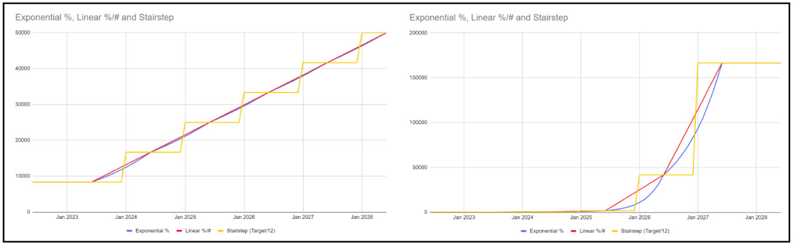

Ajouter/Modifier un
nœud - Modélisation/Transfert
But
:Si un nœud change au fil du temps, un utilisateur peut utiliser
l'onglet Modélisation/Transfert pour modéliser la croissance/la baisse au
sein d'un
nœud unique ou un transfert d'un nœud à un autre. Notez que cette
fonctionnalité n'est
disponible que pour les nœuds de nombre (#) et les nœuds de pourcentage (%)
(les
nœuds des unités de prévision et unités de planification y compris).
Utiliser
cet onglet :
Les utilisateurs peuvent manuellement entrez tous les changements
souhaités au fil du temps (croissance/perte/transfert) en haut
table ou ils peuvent utiliser le
Calculatrice de modélisation pour
calculer le taux mensuel de
changement (voir la section "Calculatrice de modélisation" ci-dessous pour
plus d'informations). Chaque entrée doit être ajoutée sous forme de lignes
distinctes par modification dans le tableau supérieur
(c'est-à-dire qu'un nœud ne peut pas croître et être transféré dans une
seule ligne de saisie de données - il doit s'agir de deux lignes
distinctes).
Règles
pour les nœuds de transfert:
- Les nœuds numériques ne peuvent être transférés que vers d'autres nœuds
numériques et doivent appartenir au même niveau.
- Les nœuds de pourcentage ne peuvent être transférés que vers d'autres
nœuds de pourcentage et doivent appartenir au même parent.
- Les transferts sont toujours négatifs depuis le nœud source et positifs
vers le nœud destination.
- L'extrapolation n'est pas autorisée sur un nœud qui dispose également
d'un transfert, que ce soit vers/depuis un autre nœud.
| Type de modélisation |
# Calcul de nœud |
% Calcul de nœud |
| Linéaire (#) |
+/- un nombre fixe chaque mois |
N / A |
| Linéaire (%) |
+/- un pourcentage statique chaque mois, calculé en fonction
du mois de départ |
N / A |
| Exponentiel (%) |
+/- un pourcentage chaque mois, calculé sur le mois
précédent comme un pourcentage glissant |
N / A |
| Linéaire (% point) |
N / A |
+/- un pourcentage statique chaque mois (par exemple, si le
mois de départ est de 30 % et que la variation est de +1 %
chaque mois, le mois suivant est de 31 %, le suivant est de
32 %, ainsi de suite) |
- Cliquer sur "Afficher les données mensuelles" pour afficher un
tableau et un graphique avec le nœud
valeur dans le temps
-
Cette fonctionnalité est utile pour voir comment la modélisation
et le transfert
les entrées affectent les données mensuelles sous forme
graphique et tabulaire.
-
Dans les données tabulaires, les utilisateurs peuvent ajouter
une modification manuelle pour un mois spécifique ou saisir un
pourcentage d'indice de saisonnalité.
(disponible uniquement pour #nœuds), selon les besoins.
-
Si un utilisateur coche "La modification manuelle affecte le
mois à venir," le montant manuel ajouté à la fin du mois.
le mois sera reporté au début du mois suivant. Si aucun de ces
éléments
les champs sont pertinents, les utilisateurs peuvent décocher
"Afficher (saisonnalité et) modification manuelle" pour
masquer ces colonnes.
Exemples
:
- Croissance simple (# linéaire) - l'exemple ci-dessous montre une
croissance de la population chaque mois de 500/mois de janvier 2022 à
décembre 2024.

- Perte simple (# linéaire) - l'exemple ci-dessous montre
l'attrition chaque mois de 100/mois de janvier 2022 à décembre 2024. QAT
utilise un nombre négatif pour indiquer une diminution ou une
perte.

- Croissance simple (% linéaire) - l'exemple ci-dessous montre une
croissance démographique régulière de 2 % chaque mois de janvier 2022 à
décembre 2024. QAT a calculé que ce changement augmente la population de
108,64 chaque mois.

- Croissance simple (exponentielle %) - l'exemple ci-dessous montre
une croissance démographique de 1 % chaque mois de janvier 2022 à
décembre 2024. Parce que la croissance est exponentielle, le changement
diffère chaque mois.

- QAT calcule cette variation à 54,32 en janvier-22
- QAT calcule cette variation à 54,86 en février-22 et
- QAT calcule ce changement à 55,41 en mars 22
-
Perte pluriannuelle - l'exemple ci-dessous montre un taux
d'attrition (perte) différent chaque année. L'année 1 (janvier 2022
à décembre 2022) diminue la population de 1 % ou 54,32 chaque mois,
l'année 2 (janvier 2023 à décembre 2023) diminue
la population de 2 % ou 95,6 chaque mois, etc. QAT utilise un nombre
négatif pour désigner un diminution ou perte. 
-
Transfert - l'exemple ci-dessous montre un transfert de 250
patients chaque mois pendant un an, de janvier 2022 à décembre 2022,
du nœud actuel (Adultes 1ère ligne) vers un autre nœud (Adultes 2e
ligne). Ce transfert apparaîtra également
sur l'autre nœud (Adultes 2e ligne) grisé pour signifier un
changement non modifiable. 
Calculatrice de
modélisation:
Cliquez sur l'icône de la calculatrice de modélisation si vous avez besoin
d'aide pour calculer le
taux de variation mensuel. Le calculateur de modélisation Valeur
finale/Changement
est
disponible pour tous les nœuds à l'exception des nœuds d'agrégation et de la
modélisation
La calculatrice Cible annuelle n'est disponible que pour les nœuds
numériques. Commencez par
sélectionner
un Type de modélisation (# Linéaire, % Linéaire ou % Exponentiel),
puis un Type de cible (Valeur finale/Changement ou Objectif annuel) :
- Valeur de fin/Changement : utilisez ceci si vous avez une valeur
cible
(non cumulatif) ou changement total souhaité sur une période spécifique,
plutôt
qu'un taux de variation mensuel connu.
-
La Date de début et la Date cible seront
renseignées.
basé sur
entrées originales pour la Date de début et la Date de fin dans
la modélisation
tableau, qui sont par défaut, basés sur la période de prévision.
Le
l'utilisateur peut les modifier s'il le souhaite. Ces deux dates
reviendront
dans la table de modélisation.
-
La Valeur de départ est la valeur du nœud au début de la
mois pour
la date de début, telle que calculée par QAT. En d'autres
termes, le début
La valeur est la valeur du nœud avant que des modifications de
modélisation ne se produisent. Ce
Le champ est calculé et ne peut pas être modifié directement par
l'utilisateur.
Si la date de début est le mois qui suit le « mois » sur le nœud
Onglet Données, alors la valeur de départ est égale à la "Valeur
du nœud"
fourni par l'utilisateur dans l'onglet Données du nœud.
-
La Période est calculée comme suit : Date cible - Date de
début (en
mois).
Cette valeur n'est pas affichée dans le front-end de QAT, mais
est utilisée
dans les formules ci-dessous.
-
Sur la base des données ou hypothèses disponibles, saisissez les
données dans l'un des
les champs suivants : Valeur de fin cible, Cible
Modification (%) ou
Changement cible (#)
-
Une fois qu'une entrée est fournie, les autres champs seront
automatiquement renseigné, ainsi que le final'Calculé
Changement d'un mois à l'autre'.
-
Lorsque l'utilisateur clique sur "Accepter", la modification
mensuelle (% ou #) sera
renseigné dans la table de modélisation principale, en fonction
des formules
ci-dessous. Tous les changements négatifs seront affichés comme
"diminution" et
les changements positifs sont affichés sous la forme
"augmentation", avec le nombre affiché
en valeur absolue.
Si l'utilisateur saisit une Valeur de fin cible :
|
Linéaire (%) |
Linéaire (#) |
Exponentiel (%) |
| Changement cible (%) |
(Valeur de fin cible - Début
Valeur) / Valeur de départ |
| Changement cible (#) |
- |
Valeur de fin cible - Valeur de début |
- |
| Variation mensuelle calculée |
(Valeur de fin cible - Début
Valeur) / Période |
| Variation mensuelle (%) |
(((Valeur de fin cible - Valeur de départ)/
Période) / Valeur de départ) * 100 |
- |
((Valeur de fin cible / Valeur de début) ^
(1 /
Période) - 1) * 100 |
| Variation mensuelle (#) |
- |
Modification (#) / Période |
- |
Si l'utilisateur saisit Changement cible (%) :
|
Linéaire (%) |
Linéaire (#) |
Exponentiel (%) |
| Valeur finale cible |
Valeur de départ + (Valeur de
départ *
Changement cible (%)/100)/100 |
| Changement cible (#) |
- |
Valeur de fin cible - Valeur de début |
- |
| Variation mensuelle calculée |
(Valeur de départ * Modification
cible
(%)) / 100 / Période |
| Variation mensuelle (%) |
(((Valeur de fin cible - Valeur de début) /
Période) / Valeur de départ) * 100 |
- |
((Valeur de fin cible / Valeur de début) ^
(1 /
Période) - 1) * 100 |
| Variation mensuelle (#) |
- |
Changement cible (#) / Période |
- |
Si l'utilisateur saisit Changement cible (#) :
|
Linéaire (#) |
| Valeur finale cible |
Valeur de départ + Modification cible (#)
|
| Variation (%) |
(Valeur de fin cible - Valeur de début) /
(Début
Valeur * 100) |
| Variation mensuelle calculée |
Changement cible (#)/Période |
| Variation mensuelle (%) |
Changement cible (#)/Période |
-
Objectif annuel: Utilisez-le si vous avez des valeurs cibles
(cumulatives sur un an). Au lieu de
il suffit de diviser les objectifs annuels par 12, ce qui crée un modèle
d'escalier, c'est-à-dire la calculatrice
aidera à fournir une prévision fluide.

- Sélectionnez le premier mois de votre objectif et le nombre
d'années
de cibles disponibles.
-
QAT remplira automatiquement les lignes annuelles du
tableau en fonction du premier mois cible choisi,
en supposant que les objectifs sont pour des périodes de
12 mois.
-
Dans le tableau, saisissez les chiffres de l'année précédant
l'objectif (le réel) et de chaque année cible.
-
Après la saisie des données, cliquez sur "Calculer" (voir
ci-dessous pour l'approche de calcul et les formules).
-
Examinez les différences entre les cibles souhaitées et les
nombres calculés QAT.
Si les différences sont importantes, demandez-vous si le taux de
changement suit une trajectoire linéaire ou
modèle exponentiel et changement
la Type de modélisation (# Linéaire, % Linéaire ou %
Exponentiel) et recalculez si nécessaire.
-
Lorsque l'utilisateur clique sur "Accepter", QAT remplit les
valeurs calculées à deux endroits:
- Onglet Valeur du nœud - Mois de départ et valeur de
départ
- Onglet Modélisation/Transfert - une ligne est créée par
période de 12 mois
après la valeur de départ. Notez que ce ne sont pas
les mêmes périodes que
les années cibles (voir ci-dessous).
| Champ |
Explication / Formule |
| Changement annuel(%) |
Changement par rapport à l'année précédente. Calculé pour
chacun
année après la première année.
= (Valeur de l'année en cours - Valeur de l'année
précédente) / (Valeur de l'année précédente) |
| Variation mensuelle (%) / Variation mensuelle (#)* |
Taux exponentiel = (Valeur de l'année 2/Valeur de l'année
1)^ (1/12) -1
Taux Linéaire = Variation Annuelle / 12 |
| Mois du nœud** |
= n-7, où n est le premier mois de la cible. |
| Valeur du nœud** |
Supposé qu'il s'agit de la première valeur (la valeur
réelle) fournie par l'utilisateur divisée par 12, puisqu'il
s'agit du milieu de l'année.
= Valeur de l'année/12
|
| Total calculé |
En commençant par le mois du nœud et la valeur du nœud, et
en appliquant la variation mensuelle (% ou #), QAT calcule
chaque valeur mensuelle, puis fournit la somme des valeurs
sur des périodes de 12 mois.
|
| Différence (cible vs calculée, #) |
Calculé pour chaque année après la première année réelle.
Cette différence sera importante si la variation annuelle
varie considérablement d'une année à l'autre.
= Total calculé - Cible
|
| Différence (cible vs calculée, %) |
Calculé pour chaque année après la première année réelle.
Cette différence sera importante si la variation annuelle
varie considérablement d'une année à l'autre.
= (Total calculé - Cible) / Cible.
|
@Approche de calcul de l'objectif annuel: QAT suppose que 1/12ème de la
la valeur réelle annuelle a été atteinte au milieu de l'année réelle,
et 1/12ème des objectifs annuels seront atteints à mi-parcours chacun
année cible. QAT interpole ensuite efficacement entre ces points médians
en calculant un taux de variation mensuel linéaire ou exponentiel. Ce
mois-ci
Le taux de variation est ensuite appliqué aux deux années - la seconde
moitié de l'année.
première année et la première moitié de la deuxième année. Pour y parvenir,
QAT
calcule les champs suivants:
* Ces valeurs n'apparaissent pas dans la section "Calculatrice de
modélisation", mais sont renseignées dans le nœud de modélisation/transfert
supérieur.
table après que l'utilisateur a cliqué sur "accepter".
** Ces valeurs n'apparaissent pas dans la section 'Calculatrice de
modélisation', mais remplissent
dans les champs du nœud principal après utilisation, cliquez sur "accepter".
|